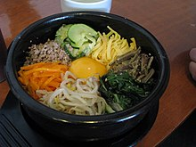

특징
한국은 기후와 풍토가 농사에 적합하여 일찍이 신석기시대 후에 잡곡 농사로 농업이 시작되었고, 그 후 벼농사가 전파되었다. 이후 곡물은 한국 음식문화의 중심이 되었고, 삼국시대 후기부터 밥과 반찬으로 주식, 부식을 분리한 한국 고유의 일상식 형태가 형성되었다
한국 요리(韓國料理) 또는 조선 요리(朝鮮料理, 문화어: 조선 료리)는 동아시아에 있는 한국/조선의 요리이다. 한국에서 발달한 고유하고도 전통적인 음식을 흔히 한식(韓食)으로도 부른다. 복잡한
궁중 요리에서부터 지방의 특색 요리와 현대의 맛있는 요리에 이르기까지 재료와 조리법이 매우 다양하다. 현대 한국 요리는 남한 요리와 북조선 요리로 나누기도 한다. 전통적인 한국 정식은 밥, 국,
김치 등과 함께 나오는 많은 반찬들로 이루어진다. 한국 요리는 주로 쌀을 기반으로 일반적으로 사용되는 성분 포함 참기름, 들기름, 고추장, 된장, 간장, 소금, 마늘, 생강, 고춧가루, 다시마
국물 등으로 맛을 낸다. 김치는 거의 항상 모든 음식에서 제공된다. 식단은 계절별로 다양한데, 전통적으로 겨울 동안에는 마당에 구멍을 파고 땅 속에 묻어 놓은 장독에 저장된 김치와 그 밖에 절인
채소들에 많이 의존했다. 그러나 현재는 계절에 상관없이 거의 대부분의 식단을 맛볼 수 있다.
한국은 기후와 풍토가 농사에 적합하여 일찍이 신석기시대 후에 잡곡 농사로 농업이 시작되었고, 그 후 벼농사가 전파되었다. 이후 곡물은 한국 음식문화의 중심이 되었고, 삼국시대 후기부터 밥과 반찬으로 주식, 부식을 분리한 한국 고유의 일상식 형태가 형성되었다
대가족 중심의 가정에서는 어른을 중심으로 그릇과 밥상이 모두 1인용으로 발달해 왔다. 그러나 핵가족 중심으로 바뀐 지금은 온 가족이 함께 두레상에서 개인용 접시에 나누어 먹는 형식으로 되었다. 음식은 처음부터 상 위에 전부 차려져 나오는 공간 전개형을 원칙으로 하였다. 쟁첩에 담는 반찬 수에 따라 3첩, 5첩, 7첩, 9첩, 12첩 반상이라는 독특한 형식을 갖춘다. 한국인의 일상식은 밥과 반찬으로 구성되는 주 부식 분리형 양식이 삼국시대 이후로 하루 세끼 정규식사의 기본형으로 정착되어 왔다. 때로는 점심에 국수장국으로 차린 면상(麵床)이나 비빔밥, 장국밥과 같은 일품요리로 식사를 할 때가 있으나 이것은 하나의 별식(別食)차림이다. 밥상에서는 밥이 주격 음식이고, 반찬은 부격 음식이어서 반찬은 밥에 맞추어 선정된다. 반상차림은 식품의 배합, 간의 농담(濃淡), 음식의 냉온(冷溫), 색상의 배합 등 여러 면에서 합리성과 조합성을 이루고 있다. 반상차림에는 3첩, 5첩, 7첩, 9첩 반상이 있고, 조선시대 궁중에서는 왕에게 12첩반상을 차리었다. 가장 간단한 3첩반상은 국, 김치 이외에 나물류와 생채, 조림이나 구이를 차린다. 간단한 3첩반상에서도 밥, 국, 김치, 장 외에 채소, 육류, 어류 등이 골고루 배합된다. 5첩반상에는 밥, 국, 김치, 장 외에 반찬 5가지, 찌개 한 가지가 오른다. 9첩반상에는 밥, 국, 김치, 장 외에 반찬 9가지, 찌개 한 가지, 찜 한 가지가 오른다.
식사 예절은 지역이나 가정에 따라 조금씩 다를 수 있고, 현재 몇몇 조항은 지켜지지 않는 것이 대부분이다. 어른과 함께 식사할 때에는 어른이 먼저 수저를 든 다음에 아랫사람이 들도록 한다. 숟가락과 젓가락을 한손에 들지 않으며, 젓가락을 사용할 때에는 숟가락을 상 위에 놓는다. 숟가락이나 젓가락을 그릇에 걸치거나 얹어 놓지 말고 밥그릇이나 국그릇을 손으로 들고 먹지 않는다. 숟가락으로 국이나 김치국물을 먼저 떠 마시고 나서 밥이나 다른 음식을 먹는다. 밥과 국물이 있는 김치, 찌개, 국은 숟가락으로 먹고, 다른 반찬은 젓가락으로 먹는다. 음식을 먹을 때는 소리를 내지 말고 수저가 그릇에 부딪혀서 소리가 나지 않도록 한다. 숟가락의 바닥을 이로 긁지 않는다. 수저로 반찬이나 밥을 뒤적거리는 것은 좋지 않고, 먹지 않는 것을 골라내거나 양념을 털어내고 먹지 않는다. 먹는 도중에 수저에 음식이 묻어 있지 않도록 하며, 밥그릇은 제일 나중에 숭늉을 부어 깨끗하게 비운다. 여럿이 함께 먹는 음식은 각자 접시에 덜어 먹고, 초장이나 초고추장도 접시에 덜어서 찍어 먹는 것이 좋다. 음식을 먹는 도중에 뼈나 생선 가시 등 입에 넘기지 못하는 것은 옆사람에게 보이지 않게 조용히 종이에 싸서 버린다. 상위나 바닥에 그대로 버려서 더럽히지 않도록 한다. 식사중에 기침이나 재채기가 나면 얼굴을 옆으로 하고 손이나 손수건으로 입을 가려서 다른 사람에게 실례가 되지 않도록 조심한다. 너무 서둘러서 먹거나 지나치게 늦게 먹지 않고 다른 사람들과 보조를 맞춘다. 어른과 함께 먹을 때는 먼저 어른이 수저를 내려 놓은 다음에 따라서 내려 놓도록 한다. 음식을 다 먹은 후에는 수저를 처음 위치에 가지런히 놓고, 사용한 휴지(손수건,수건)는 대강 접어서 상 위에 놓는다. 이쑤시개를 사용할 때에는 한 손으로 가리고 사용하고, 사용 후에는 남에게 보이지 않게 처리한다. 숟가락을 밥 위에 수직으로 꽂는 것은 제사 때나 하는 것이다. 더운 음식을 식힐 때는 입김이 상대방의 얼굴 방향을 향하지 않도록 조심한다. 음식물이 입 안에 남아있을 때에는 말하지 않는다. 상 위에 팔꿈치나 손을 걸쳐놓지 않는다. 식사가 끝나기 전에 돌아다니지 않는다. 식사 중이나 식사 후에는 트림을 하지 않는다.
|  |